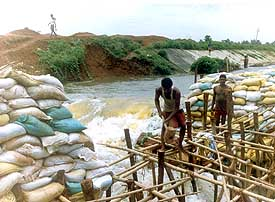
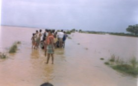
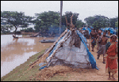

|
 While Orissa is yet to recover from the shock of the unprecedented natural disaster, the Super Cyclone of October 99, followed by the widest spread famine
subsequently in 2000; the State is now face to face with another natural calamity of vast magnitude, that is, the floods of July 2001. Compared with the three major floods in the post-independence
period, i.e., in 1955, 1982 & 1994, the current flood of July 2001 is a unique one for its ever-widest spread, the longest duration and extensiveness of damage and devastation. The current flood is also
unique for the heavy rains that accompanied it intermittently throughout from its humble start in the first week of July. Though receding on the whole, the floodwaters are still visible everywhere
leaving the people hopeless & dump-founded, as it was
witnessed in the immediate aftermath of the Super Cyclone. Though the number of human and cattle
causalities in the current floods is
relatively less than the corresponding figures of earlier floods, the state of their
survival has worsened miserably beyond description.  The current floods have affected most of the 30 districts of
Orissa. It has particularly hit hardest the life and environment of the costal districts, namely Ganjam,
Sundargarh, Balangiri, Kalahandi, Puri, Khurda, Cuttack, Jagatsinghpur, Kendrapara, Jajpur, Bhadrak & Balasore
owing to high floods in all major river systems, Mahanadi, Brahmani, Baitarani, Subarnarekha, Budhabalanga & Rushikulya & their tributaries, all falling in Bay Of Bengal. These very districts were
also subjected to immeasurable devastation in the Super Cyclone about 20 months back. In quite many places of these districts, the villages remained marooned for more than a week, entirely cut off
from outside world, with villagers taking shelter on the roofs of pucca buildings or hilltops under open sky in the drenching rains. The people who could some how escape the surging flood waters,
came to the nearest road and took shelter in the make-shift tents made of
torn. Polythene sheets that they had some how stored from the Super Cyclone days. Human beings along with their cattle and
other domestic animals inhabit each such tent. Call it religious faith or sheer superstition, the villagers who ran away from their homes in the face of the rising flood waves, didn't however miss to bring
along their cattle with them, lest they would sin against the God |

|